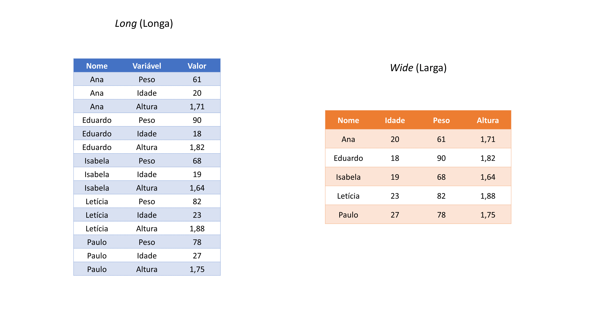
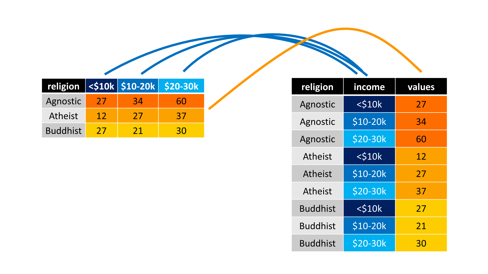

library(tidyverse)
## Ou
library(tidyr)7 Tidy Data: uma abordagem para organizar os seus dados com tidyr
7.1 Introdução e pré-requisitos
Em qualquer análise, o formato no qual os seus dados se encontram, é muito importante. O que vamos discutir neste capítulo, será como reformatar as suas tabelas, corrigir valores não disponíveis, ou “vazios” que se encontram no formato incorreto, ou então, como preencher as suas colunas que estão incompletas de acordo com um certo padrão.
Você rapidamente descobre a importância que o formato de sua tabela carrega para o seu trabalho, na medida em que você possui pensamentos como: “Uhmm…se essa coluna estivesse na forma x, eu poderia simplesmente aplicar a função y() e todos os meus problemas estariam resolvidos”; ou então: “Se o Arnaldo não tivesse colocado os totais junto dos dados desagregados, eu não teria todo esse trabalho!”; ou talvez: “Qual é o sentido de colocar o nome dos países nas colunas? Assim fica muito mais difícil de acompanhar os meus dados!”.
Para corrigir o formato das nossas tabelas, vamos utilizar neste capítulo as funções do pacote tidyr que está incluso no tidyverse. Pelo próprio nome do pacote (tidy, que significa “arrumar”), já sabemos que ele inclui diversas funções que tem como propósito, organizar os seus dados. Portanto, lembre-se de chamar pelo pacote (seja pelo tidyr diretamente, ou pelo tidyverse) antes de prosseguir:
7.2 O que é tidy data?
Em geral, nós passamos grande parte do tempo, reorganizando os nossos dados, para que eles fiquem no formato adequado para a nossa análise. Logo, aprender técnicas que facilitem o seu trabalho nesta atividade, pode economizar uma grande parte de seu tempo.
Isso é muito importante, pois uma base de dados que está bagunçada, é em geral, bagunçada em sua própria maneira. Como resultado, cada base irá exigir um conjunto de operações e técnicas diferentes das outras bases, para que ela seja arrumada. Em alguns casos, são problemas simples de serem resolvidos, já em outros, podemos ter bases que estão desarrumadas em um padrão não muito bem definido, e por isso, vão te demandar mais trabalho.
“Tidy datasets are all alike, but every messy dataset is messy in its own way”. WICKHAM (2014, p. 2).
Toda essa problemática, ocorre não apenas pelo erro humano, mas também porque podemos representar os nossos dados de diversas maneiras dentro de uma tabela. Cada maneira pode tanto facilitar muito o seu trabalho, quanto tornar o trabalho de outros, num inferno. Veja por exemplo, as tabelas abaixo. Ambas, apresentam os mesmos dados, mas em estruturas diferentes.
table2# A tibble: 12 × 4
country year type count
<chr> <dbl> <chr> <dbl>
1 Afghanistan 1999 cases 745
2 Afghanistan 1999 population 19987071
3 Afghanistan 2000 cases 2666
4 Afghanistan 2000 population 20595360
5 Brazil 1999 cases 37737
# ℹ 7 more rowstable3# A tibble: 6 × 3
country year rate
<chr> <dbl> <chr>
1 Afghanistan 1999 745/19987071
2 Afghanistan 2000 2666/20595360
3 Brazil 1999 37737/172006362
4 Brazil 2000 80488/174504898
5 China 1999 212258/1272915272
# ℹ 1 more rowAntes de partirmos para a prática, vou fornecer uma base teórica que irá sustentar as suas decisões sobre como padronizar e estruturar os seus dados. Eu expliquei anteriormente, que o tidyverse é um conjunto de pacotes que dividem uma mesma filosofia. Isso significa, que esses pacotes possuem uma conexão forte entre si. Por exemplo, as funções desses pacotes, retornam os seus resultados em tibble’s, e todas as suas funções foram construídas de forma a trabalharem bem com o operador pipe (%>%). Todas essas funções também foram projetadas seguindo as melhores práticas e técnicas em análise de dados. Sendo uma dessas práticas, o que é comumente chamado na comunidade de tidy data.
O conceito de tidy data foi definido por WICKHAM (2014), e remete a forma como você está guardando os dados em sua tabela. Eu não estou dizendo aqui que todas as funções do tidyverse que apresentei até aqui, trabalham apenas com tidy data, mas sim, que essas funções são mais eficientes com essa estrutura tidy. Uma base de dados que está no formato tidy, compartilha das três seguintes características:
Cada variável de sua tabela, deve possuir a sua própria coluna.
Cada observação de sua tabela, deve possuir a sua própria linha.
Cada valor de sua tabela, deve possuir a sua própria célula.
Primeiro, vou definir o que quero dizer exatamente com linhas, colunas e células de sua tabela. Em Figura 7.1 temos uma representação de uma base qualquer. O interesse nessa representação, não se trata dos valores e nomes inclusos nessa tabela, mas sim as áreas sombreadas dessa tabela, que estão lhe apresentando cada um dos componentes supracitados.

Agora, vamos definir o que são variáveis, observações e valores. Você já deve ter percebido, que toda base de dados, possui uma unidade básica que está sendo descrita ao longo dela. Ou seja, toda base lhe apresenta dados sobre um grupo específico (ou uma amostra) de algo. Esse “algo” pode ser um conjunto de municípios, empresas, sequências genéticas, animais, clientes, realizações de um evento estocástico, dentre outros.
Logo, se a minha base contém dados sobre os municípios do estado de Minas Gerais (MG), cada um desses municípios são uma observação de minha base. Ao dizer que cada observação deve possuir a sua própria linha, eu estou dizendo que todas as informações referentes a um município específico, devem estar em uma única linha. Em outras palavras, cada uma das 853 (total de municípios em MG) linhas da minha base, contém os dados de um município diferente do estado.
Entretanto, se a minha base descreve a evolução do PIB desses mesmos municípios nos anos de 2010 a 2020, eu não possuo mais um valor para cada município, ao longo da base. Neste momento, eu possuo 10 valores diferentes, para cada município, e mesmo que eu ainda esteja falando dos mesmos municípios, a unidade básica da minha base, se alterou. Cada um desses 10 valores, representa uma observação do PIB deste município em um ano distinto. Logo, cada um desses 10 valores para cada município, deve possuir a sua própria linha. Se o estado de Minas Gerais possui 853 municípios diferentes, isso significa que nossa base deveria ter \(10 \times 853 = 8.530\) linhas. Por isso, é importante que você preste atenção em seus dados, e identifique qual é a unidade básica que está sendo tratada.
Agora, quando eu me referir as variáveis de sua base, eu geralmente estou me referindo as colunas de sua base, porque ambos os termos são sinônimos em análises de dados. Porém, alguns cuidados são necessários, pois as variáveis de sua base podem não se encontrar nas colunas de sua tabela. Como eu disse anteriormente, há diversas formas de representar os seus dados, e por isso, há diversas formas de alocar os componentes de seus dados ao longo de sua tabela.
Uma variável de sua base de dados, não é apenas um elemento que (como o próprio nome dá a entender) varia ao longo de sua base, mas também é um elemento que lhe apresenta uma característica das suas observações. Ou seja, cada variável descreve uma característica (cor de pele, população, receita, …) de cada observação (pessoa, município, empresa, …) da minha base. O que é ou não, uma característica de sua unidade básica, irá depender de qual é essa unidade básica que está sendo descrita na base.
A população total, é uma característica geralmente associada a regiões geográficas (municípios, países, etc.), já a cor de pele pode ser uma característica de uma amostra de pessoas entrevistadas em uma pesquisa de campo (como a PNAD contínua), enquanto o número total de empresas é uma característica associada a setores da atividade econômica (CNAE - Classificação Nacional de Atividades Econômicas).
Por último, os valores de sua base, correspondem aos registros das características de cada observação de sua base. Como esse talvez seja o ponto mais claro e óbvio de todos, não vou me prolongar mais sobre ele. Pois as três características de tidy data que citamos anteriormente são interrelacionadas, de forma que você não pode satisfazer apenas duas delas. Logo, se você está satisfazendo as duas primeiras, você não precisa se preocupar com a característica que diz respeito aos valores.

Portanto, sempre inicie o seu trabalho, identificando a unidade básica de sua base. Em seguida, tente encontrar quais são as suas variáveis, ou as características dessa unidade básica que estão sendo descritas na base. Após isso, basta alocar cada variável em uma coluna, e reservar uma linha para cada observação diferente de sua base, que você automaticamente estará deixando uma célula para cada valor da base.
7.2.1 Será que você entendeu o que é tidy data?
Nessa seção vamos fazer um teste rápido, para saber se você entendeu o que é uma tabela no formato tidy. Olhe por algum tempo para os exemplos abaixo, e reflita sobre qual dessas tabelas está no formato tidy. Tente também descobrir quais são os problemas que as tabelas “não tidy” apresentam, ou em outras palavras, qual das três definições que apresentamos anteriormente, que essas tabelas “não tidy” acabam rompendo.
table1# A tibble: 6 × 4
country year cases population
<chr> <dbl> <dbl> <dbl>
1 Afghanistan 1999 745 19987071
2 Afghanistan 2000 2666 20595360
3 Brazil 1999 37737 172006362
4 Brazil 2000 80488 174504898
5 China 1999 212258 1272915272
# ℹ 1 more rowtable2# A tibble: 12 × 4
country year type count
<chr> <dbl> <chr> <dbl>
1 Afghanistan 1999 cases 745
2 Afghanistan 1999 population 19987071
3 Afghanistan 2000 cases 2666
4 Afghanistan 2000 population 20595360
5 Brazil 1999 cases 37737
# ℹ 7 more rowstable3# A tibble: 6 × 3
country year rate
<chr> <dbl> <chr>
1 Afghanistan 1999 745/19987071
2 Afghanistan 2000 2666/20595360
3 Brazil 1999 37737/172006362
4 Brazil 2000 80488/174504898
5 China 1999 212258/1272915272
# ℹ 1 more rowComo eu disse anteriormente, a primeira coisa que você deve fazer, é identificar a unidade básica que está sendo tratada na tabela. Nos exemplos acima, essas tabelas dizem respeito à dados de três países (Brasil, China e Afeganistão) em dois anos diferentes (1999 e 2000). Logo, a nossa tabela possui \(3 \times 2 = 6\) observações diferentes. Se uma das regras, impõe que todas as linhas devem possuir informações de uma única observação, a nossa tabela deveria possuir 6 linhas. Com isso, nós já sabemos que algo está errado com a tabela 2, pois ela possui o dobro de linhas.
Na verdade, o problema na tabela 2 é que ela está quebrando a regra de que cada variável na tabela deve possuir a sua própria coluna. Por causa dessa regra, a tabela 2 acaba extrapolando o número de linhas necessárias. Olhe para as colunas type e count. A coluna count lhe apresenta os principais valores que estamos interessados nessa tabela. Porém, a coluna type, está lhe apresentando duas variáveis diferentes.
Lembre-se de que variáveis, representam características da unidade básica de sua tabela. No nosso caso, essa unidade básica se trata dos dados anuais de países, logo, cases e population, são variáveis ou características diferentes desses países. Uma dessas variáveis está lhe apresentando um dado demográfico (população total), já a outra, está lhe trazendo um indicador epidemiológico (número de casos de alguma doença). Por isso, ambas variáveis deveriam possuir a sua própria coluna.
Ok, mas e as tabelas 1 e 3? Qual delas é a tidy? Talvez, para responder essa pergunta, você deveria primeiro procurar pela tabela “não tidy”. Veja a tabela 3, e se pergunte: “onde se encontram os valores de população e de casos de cada país nessa tabela?”. Ao se fazer essa pergunta, você provavelmente já irá descobrir qual é o problema nessa tabela.

A tabela 3, também rompe com a regra de que cada variável deve possuir a sua própria coluna. Pois o número de casos e a população total, estão guardados em uma mesma coluna! Ao separar os valores de população e de número de casos na tabela 3, em duas colunas diferentes, você chega na tabela 1, que é um exemplo de tabela tidy, pois agora todas as três definições estão sendo respeitadas.
7.2.2 Uma breve definição de formas
Apenas para que os exemplos das próximas seções, fiquem mais claros e fáceis de se visualizar mentalmente, vou definir dois formatos gerais que a sua tabela pode assumir, que são: long (longa) e wide (larga)1. Ou seja, qualquer que seja a sua tabela, ela vai em geral, estar em algum desses dois formatos, de uma forma ou de outra.
Esses termos (long e wide) são bem descritivos por si só. A ideia é que se uma tabela qualquer, está no formato long, ela adquire um aspecto visual de longa, ou em outras palavras, visualmente ela aparenta ter muitas linhas, e poucas colunas. Já uma tabela que está no formato wide, adquire um aspecto visual de larga, como se essa tabela possuísse mais colunas do que o necessário, e poucas linhas. Tais formas estão apresentadas em Figura 7.2.
7.3 Operações de pivô
As operações de pivô são as principais operações que você irá utilizar para reformatar a sua tabela. Uma operação de pivô basicamente altera as dimensões de sua tabela, ou dito de outra maneira, essas operações buscam transformar colunas em linhas, ou vice-versa. Para exemplificar essas operações, vamos utilizar as tabelas que vem do próprio pacote tidyr. Logo, se você chamou pelo tidyverse através de library(), você tem acesso a tabela abaixo. Basta chamar no console pelo objeto relig_income.
relig_income# A tibble: 18 × 11
religion `<$10k` `$10-20k` `$20-30k` `$30-40k` `$40-50k` `$50-75k` `$75-100k`
<chr> <dbl> <dbl> <dbl> <dbl> <dbl> <dbl> <dbl>
1 Agnostic 27 34 60 81 76 137 122
2 Atheist 12 27 37 52 35 70 73
3 Buddhist 27 21 30 34 33 58 62
4 Catholic 418 617 732 670 638 1116 949
5 Don’t kn… 15 14 15 11 10 35 21
# ℹ 13 more rows
# ℹ 3 more variables: `$100-150k` <dbl>, `>150k` <dbl>, …Essa tabela está nos apresentando o salário médio de pessoas pertencentes a diferentes religiões. Veja que em cada coluna dessa tabela, você possui os dados de uma faixa salarial específica. Essa é uma estrutura que pode ser fácil e intuitiva em alguns momentos, mas certamente irá trazer limites importantes para você dentro do R. Devido a especialidade que o R possui sobre operações vetorizadas, o ideal seria transformarmos essa tabela para o formato tidy.
A unidade básica dessa tabela, são os grupos religiosos, e a faixa salarial representa uma característica desses grupos. Há diferentes níveis salariais na tabela, que estão sendo distribuídos ao longo de diferentes colunas. Tendo em vista isso, uma das regras não está sendo respeitada. Pois todos esses diferentes níveis salarias, representam uma única característica, ou em outras palavras, eles transmitem o mesmo tipo de informação, que é um nível salarial daquele grupo religioso. Por isso, todas essas características da tabela, deve estar em uma única coluna. A Figura 7.3 nos apresenta, em uma representação visual, o que precisamos fazer.

Por isso, quando você estiver em um momento como este, em que você deseja transformar as suas linhas em colunas, ou vice-versa, você está na verdade, procurando por uma operação de pivô.
7.3.1 Adicionando linhas à sua tabela com pivot_longer()
Atualmente, a tabela relig_income possui poucas linhas e muitas colunas, e por isso, ela adquire um aspecto visual de “larga” (ou “wide”). Como eu disse, seria muito interessante para você, que transformasse essa tabela, de modo a agrupar as diferentes faixas de níveis salarias em uma única coluna. Logo, se estamos falando em reduzir o número de colunas, estamos querendo alongar a base, ou dito de outra forma, aumentar o número de linhas da base. Para fazermos isso, devemos utilizar a função pivot_longer().
Essa função possui três argumentos principais: 1) cols, os nomes das colunas que você deseja transformar em linhas; 2) names_to, o nome da nova coluna onde serão alocados os nomes, ou os rótulos das colunas que você definiu em cols; 3) values_to, o nome da nova coluna onde serão alocados os valores da sua tabela, que se encontram nas colunas que você definiu em cols. Como nós queremos transformar todas as colunas da tabela relig_income, que contém faixas salariais, eu posso simplesmente colocar no argumento cols, um símbolo de menos antes do nome da coluna religion, que é a única coluna da tabela, que não possui esse tipo de informação. Ou seja, dessa forma, eu estou dizendo à pivot_longer(), para transformar todas as colunas (exceto a coluna religion).
relig_income %>%
pivot_longer(
cols = -religion,
names_to = "income",
values_to = "values"
)# A tibble: 180 × 3
religion income values
<chr> <chr> <dbl>
1 Agnostic <$10k 27
2 Agnostic $10-20k 34
3 Agnostic $20-30k 60
4 Agnostic $30-40k 81
5 Agnostic $40-50k 76
# ℹ 175 more rowsVale destacar, que você pode selecionar as colunas que você deseja transformar em linhas (argumento cols), através dos mesmos mecanismos que utilizamos na função select(). Ao eliminarmos a coluna religion com um sinal de menos (-) estávamos utilizando justamente um desses métodos. Mas podemos também, por exemplo, selecionar todas as colunas, que possuem dados de tipo numérico, com a função is.numeric(), atingindo o mesmo resultado anterior. Ou então, poderíamos selecionar todas as colunas que possuem em seu nome, algum dígito numérico, através da expressão regular "\\d" (digit) na função matches().
relig_income %>%
pivot_longer(
# A linha abaixo também poderia ser: cols = matches("\\d")
cols = is.numeric,
names_to = "income",
values_to = "values"
)Portanto, sempre que utilizar a função pivot_longer(), duas novas colunas serão criadas. Em uma dessas colunas (values_to), a função irá guardar os valores que se encontravam nas colunas que você transformou em linhas. Já na outra coluna (names_to), a função irá criar rótulos em cada linha, que lhe informam de qual coluna (que você transformou em linhas) veio o valor disposto na coluna anterior (values_to). Você sempre deve definir como texto o nome dessas duas novas colunas. Isto é, sempre forneça os nomes dessas colunas, entre aspas duplas ou simples.
Como um outro exemplo, temos a tabela billboard, que também está disponível no pacote tidyr. Nessa tabela, temos a posição que diversas músicas ocuparam na lista da Billboard das 100 músicas mais populares no mundo, durante o ano de 2000. Portanto a posição que cada uma dessas músicas ocuparam nessa lista, ao longo do tempo, é a unidade básica que está sendo tratada nessa tabela. Agora, repare que a tabela possui muitas colunas (79 no total), onde em cada uma delas, temos a posição de uma música em uma dada semana desde a sua entrada na lista.
billboard# A tibble: 317 × 79
artist track date.entered wk1 wk2 wk3 wk4 wk5 wk6 wk7 wk8
<chr> <chr> <date> <dbl> <dbl> <dbl> <dbl> <dbl> <dbl> <dbl> <dbl>
1 2 Pac Baby… 2000-02-26 87 82 72 77 87 94 99 NA
2 2Ge+her The … 2000-09-02 91 87 92 NA NA NA NA NA
3 3 Doors Do… Kryp… 2000-04-08 81 70 68 67 66 57 54 53
4 3 Doors Do… Loser 2000-10-21 76 76 72 69 67 65 55 59
5 504 Boyz Wobb… 2000-04-15 57 34 25 17 17 31 36 49
# ℹ 312 more rows
# ℹ 68 more variables: wk9 <dbl>, wk10 <dbl>, wk11 <dbl>, wk12 <dbl>, …São ao todo, 76 colunas contendo a posição de cada música no ranking na semana correspondente. Novamente, quando há um conjunto muito grande de colunas que desejamos selecionar, podemos utilizar os métodos alternativos de seleção que vimos em select(). Repare que os nomes dessas 76 colunas estão sempre no formato (wk...). Logo, você pode se aproveitar desse padrão, e selecionar todas essas colunas de uma vez só, usando a função starts_with() no argumento cols de pivot_longer(). Também podemos selecionar todas essas colunas pelos seus índices, fornecendo o vetor 4:79 para o argumento cols.
billboard_long <- billboard %>%
pivot_longer(
# A linha abaixo também poderia ser: cols = 4:79
cols = starts_with("wk"),
names_to = "week",
values_to = "position"
)
billboard_long# A tibble: 24,092 × 5
artist track date.entered week position
<chr> <chr> <date> <chr> <dbl>
1 2 Pac Baby Don't Cry (Keep... 2000-02-26 wk1 87
2 2 Pac Baby Don't Cry (Keep... 2000-02-26 wk2 82
3 2 Pac Baby Don't Cry (Keep... 2000-02-26 wk3 72
4 2 Pac Baby Don't Cry (Keep... 2000-02-26 wk4 77
5 2 Pac Baby Don't Cry (Keep... 2000-02-26 wk5 87
# ℹ 24,087 more rows7.3.2 Adicionando colunas à sua tabela com pivot_wider()
Por outro lado, você talvez deseje realizar a operação contrária. Ou seja, se você deseja transformar linhas de sua tabela, em novas colunas, você deve utilizar a função pivot_wider(), que possui argumentos muito parecidos com os de pivot_longer().
Vamos começar com um exemplo simples. Veja a tabela df que estou criando logo abaixo. Nessa tabela, temos dados como o peso, a idade e a altura de cinco pessoas diferentes. Porém, perceba que essa tabela, não está no formato tidy. Pois temos três informações (peso, idade e altura) que representam características diferentes da unidade básica da tabela (pessoas), condensadas em uma mesma coluna (variavel).
df <- tibble(nome = c("Ana", "Ana", "Ana", "Eduardo", "Eduardo",
"Eduardo", "Paulo", "Paulo", "Paulo", "Henrique", "Henrique",
"Henrique", "Letícia", "Letícia", "Letícia"), variavel = c("idade",
"peso", "altura", "idade", "peso", "altura", "idade", "peso",
"altura", "idade", "peso", "altura", "idade", "peso", "altura"
), valor = c(20, 61, 1.67, 18, 90, 1.89, 19, 68, 1.67, 23, 82,
1.72, 27, 56, 1.58))
df# A tibble: 15 × 3
nome variavel valor
<chr> <chr> <dbl>
1 Ana idade 20
2 Ana peso 61
3 Ana altura 1.67
4 Eduardo idade 18
5 Eduardo peso 90
# ℹ 10 more rowsPortanto, tendo identificado o problema, precisamos agora, separar as três variáveis contidas na coluna variavel, em três novas colunas da tabela df. Logo, precisamos alargar a nossa base, pois estamos eliminando linhas e adicionando colunas à tabela.
Já sabemos que podemos utilizar a função pivot_wider() para esse trabalho, e os seus argumentos são: 1) id_cols, que são as colunas suficientes para (ou capazes de) identificar uma única observação de sua base; 2) names_from, que é a coluna de sua tabela que contém as linhas a serem dividas, ou transformadas, em várias outras colunas; 3) values_from, que é a coluna com os valores a serem posicionados nas novas células, que serão criadas durante o processo de “alargamento” da sua tabela.
Antes de prosseguirmos para os exemplos práticos, é provavelmente uma boa ideia, refletirmos sobre o que o argumento id_cols significa. As colunas a serem estipuladas no argumento id_cols são aquelas que conseguem identificar cada observação de sua base. No nosso caso, a tabela df, contém dados sobre características físicas ou biológicas, de cinco pessoas diferentes. Logo, a unidade básica dessa tabela, são as pessoas que estão sendo descritas nela, e por isso, a coluna nome é capaz de identificar cada observação (unidade básica) da tabela, pois ela nos traz justamente um código social de identificação, isto é, o nome dessas pessoas.
Pensando em um outro exemplo, se você dispõe de uma base que descreve o PIB de cada município do estado de Minas Gerais, você precisa definir em id_cols, a coluna (ou o conjunto de colunas) que é capaz de identificar cada um dos 853 municípios de MG, pois esses municípios são a unidade básica da tabela. Porém, se a sua base está descrevendo o PIB desses mesmos municípios, mas agora ao longo dos anos de 2010 a 2020, a sua unidade básica passa a ter um componente temporal, e se torna a evolução desses municípios ao longo do tempo. Dessa forma, você precisaria não apenas de uma coluna que seja capaz de identificar qual o município que está sendo descrito na base, mas também de uma outra coluna que possa identificar qual o ano que a informação desse município se refere.
Tendo isso em mente, vamos partir para os próximos dois argumentos. No nosso caso, queremos pegar as três variáveis que estão ao longo da coluna variavel, e separá-las em três colunas diferentes. Isso é exatamente o que devemos definir em names_from. O que este argumento está pedindo, é o nome da coluna que contém os valores que vão servir de nome para as novas colunas que pivot_wider() irá criar. Ou seja, ao fornecermos a coluna variavel para names_from, pivot_wider() irá criar uma nova coluna para cada valor único que se encontra na coluna variavel. Como ao longo da coluna variavel, temos três valores diferentes (peso, altura e idade), pivot_wider() irá criar três novas colunas que possuem os nomes de peso, altura e idade.
Ao criar as novas colunas, você precisa preenchê-las de alguma forma, a menos que você deseja deixá-las vazias. Em outras palavras, a função pivot_wider() irá lhe perguntar: “Ok, eu criei as colunas que você me pediu para criar, mas eu devo preenchê-las com que valores?”. Você deve responder essa pergunta, através do argumento values_from, onde você irá definir qual é a coluna que contém os valores que você deseja alocar ao longo dessas novas colunas (que foram criadas de acordo com os valores contidos na coluna que você definiu em names_from). Na nossa tabela df, é a coluna valor que contém os registros, ou os valores que cada variável (idade, altura e peso) assume nessa amostra. Logo, é essa coluna que devemos conectar à values_from.
df %>%
pivot_wider(
id_cols = nome,
names_from = variavel,
values_from = valor
)# A tibble: 5 × 4
nome idade peso altura
<chr> <dbl> <dbl> <dbl>
1 Ana 20 61 1.67
2 Eduardo 18 90 1.89
3 Paulo 19 68 1.67
4 Henrique 23 82 1.72
5 Letícia 27 56 1.58Esse foi um exemplo simples de como utilizar a função, e que vai lhe servir de base para praticamente qualquer aplicação de pivot_wider(). Porém, em algumas situações que você utilizar pivot_wider(), pode ser que a sua tabela não possua colunas o suficiente, que possam identificar unicamente cada observação de sua base, e isso, ficará mais claro com um outro exemplo.
Com o código abaixo, você é capaz de recriar a tabela vendas, em seu R. Lembre-se de executar a função set.seed() antes de criar a tabela vendas, pois é essa função que garante que você irá recriar exatamente a mesma tabela que a minha. Nessa tabela vendas, possuímos vendas hipóteticas de diversos produtos (identificados por produtoid), realizadas por alguns vendedores (identificados por usuario) que arrecadaram em cada venda os valores descritos na coluna valor. Perceba também, que essas vendas são diárias, pois possuímos outras três colunas (ano, mes e dia) que definem o dia em que a venda ocorreu.
nomes <- c("Ana", "Eduardo", "Paulo", "Henrique", "Letícia")
produto <- c("10032", "10013", "10104", "10555", "10901")
set.seed(1)
vendas <- tibble(
ano = sample(2010:2020, size = 10000, replace = TRUE),
mes = sample(1:12, size = 10000, replace = TRUE),
dia = sample(1:31, size = 10000, replace = TRUE),
usuario = sample(nomes, size = 10000, replace = TRUE),
valor = rnorm(10000, mean = 5000, sd = 1600),
produtoid = sample(produto, size = 10000, replace = TRUE)
) %>%
arrange(ano, mes, dia, usuario)Perceba pelos resultados abaixo, que nós temos cinco vendedores e cinco produtos diferentes que estão sendo descritos ao longo da tabela vendas.
unique(vendas$usuario)[1] "Ana" "Henrique" "Letícia" "Eduardo" "Paulo" unique(vendas$produtoid)[1] "10104" "10013" "10555" "10032" "10901"Se você tentar distribuir tanto os vendedores (usuario), quanto os produtos vendidos (produtoid), em novas colunas dessa tabela, utilizando pivot_wider(), um aviso será levantado, e o resultado dessa operação (apesar de correto) será provavelmente, muito estranho para você:
vendas_wide <- vendas %>%
pivot_wider(
id_cols = c("ano", "mes", "dia", "produtoid"),
names_from = usuario,
values_from = valor
)Warning: Values from `valor` are not uniquely identified; output will contain list-cols.
• Use `values_fn = list` to suppress this warning.
• Use `values_fn = {summary_fun}` to summarise duplicates.
• Use the following dplyr code to identify duplicates.
{data} |>
dplyr::summarise(n = dplyr::n(), .by = c(ano, mes, dia, produtoid, usuario))
|>
dplyr::filter(n > 1L)vendas_wide# A tibble: 7,845 × 9
ano mes dia produtoid Ana Henrique Letícia Eduardo Paulo
<int> <int> <int> <chr> <list> <list> <list> <list> <list>
1 2010 1 1 10104 <dbl [1]> <dbl [1]> <NULL> <NULL> <NULL>
2 2010 1 2 10013 <NULL> <dbl [1]> <NULL> <NULL> <NULL>
3 2010 1 3 10555 <dbl [1]> <NULL> <dbl [1]> <NULL> <NULL>
4 2010 1 4 10555 <dbl [1]> <NULL> <NULL> <NULL> <NULL>
5 2010 1 4 10013 <NULL> <NULL> <NULL> <dbl [1]> <NULL>
# ℹ 7,840 more rowsComo podemos ver pelo resultado acima, uma mensagem de aviso apareceu, nos informando que os valores não podem ser unicamente identificados através das colunas que fornecemos em id_cols (Values are not uniquely identified), e que por isso, a função pivot_wider(), acabou transformando as novas colunas que criamos, em listas (output will contain list-cols.).
Ou seja, cada uma das colunas que acabamos de criar com pivot_wider(), são listas (e.g. list). Isso pode ser estranho para muitos usuários, pois na maioria das vezes, as colunas de suas tabelas serão vetores atômicos2. Um outro motivo que provavelmente levantou bastante dúvida em sua cabeça é: “Como assim as colunas que forneci não são capazes de identificar unicamente os valores? Em que sentido elas não são capazes de realizar tal ação?”.
A resposta curta simples é que, existem alguns casos dentro da tabela vendas em que, um mesmo vendedor conseguiu vender o mesmo produto, em uma mesma data, mais de uma única vez. Por causa disso, a combinação de colunas ano, mes, dia e produtoid se torna insuficiente para diferenciar uma venda da outra. Por exemplo, observe abaixo, que os vendedores Ana e Henrique venderam no dia 01/01/2010, uma unidade do produto de ID 10104:
vendas |>
filter(
produtoid == 10104,
ano == 2010, mes == 1, dia == 1
)# A tibble: 2 × 6
ano mes dia usuario valor produtoid
<int> <int> <int> <chr> <dbl> <chr>
1 2010 1 1 Ana 3907. 10104
2 2010 1 1 Henrique 6139. 10104 Neste ponto, se pergunte: “Ok, Ana vendeu uma unidade do produto 10104, no dia 01. Mas e se ela tivesse vendido duas unidades desse mesmo produto 10104, no dia 01?”. Tente imaginar para onde os valores dessas vendas seriam movidos após a operação de pivô que realizamos no exemplo anterior. Isso não é uma questão trivial. Pois temos agora dados de duas vendas diferentes…mas apenas uma célula disponível em nossa tabela, para guardar esses dados. É a partir deste choque, que podemos identificar qual foi o motivo para o uso de listas nas novas colunas.
Ou seja, temos uma única célula na tabela (localizada na primeira linha, e quinta coluna da tabela), que deve conter o valor arrecadado na venda do produto 10104, realizada pela vendedora Ana no dia 01/01/2010. Você poderia pensar: “Bem, por que não somar os valores dessas duas vendas? Dessa forma, temos apenas um valor para encaixar nessa célula”. Essa é uma alternativa possível, porém, ela gera perda de informação, especialmente se o valor arrecadado nas duas operações forem diferentes. Por exemplo, se a receita da primeira venda foi de 3907, e da segunda, de 4530. Com essa alternativa, nós sabemos que a soma das duas vendas ocorridas naquele dia, geraram 8437 reais de receita, mas nós não sabemos mais qual das duas vendas teve o maior valor de venda.
Isso é particularmente importante, pois podemos gerar o mesmo valor (8437 reais) de múltiplas formas. Pode ser que a Ana tenha vendido cinco unidades do produto 10104, tendo arrecadado em cada venda, o valor de 1687,4 reais. Mas ela poderia atingir o mesmo valor, ao vender dez unidades do produto 10104, dessa vez, arrecadando um valor médio bem menor, de 843,7 reais. Portanto, se utilizarmos a soma desses valores, como forma de contornarmos o problema posto anteriormente, os administradores da loja não poderão mais inferir da tabela vendas, se as suas vendas tem se reduzido em quantidade, ou se o valor arrecadado em cada venda, tem caído ao longo dos últimos anos.
Apesar de ser uma alternativa ruim em muitos casos, ela pode fazer sentido para o seu caso específico. Nesta situação, as versões mais recentes do pacote tidyr, oferecem na função pivot_wider() o argumento values_fn, onde você pode fornecer o nome de uma função a ser aplicada sobre os valores dispostos em cada célula. Logo, se quiséssemos somar os valores de vendas de cada célula criada na tabela vendas_wide, poderíamos realizar os comandos abaixo:
vendas %>%
pivot_wider(
id_cols = c("ano", "mes", "dia", "produtoid"),
names_from = usuario,
values_from = valor,
values_fn = sum
)# A tibble: 7,845 × 9
ano mes dia produtoid Ana Henrique Letícia Eduardo Paulo
<int> <int> <int> <chr> <dbl> <dbl> <dbl> <dbl> <dbl>
1 2010 1 1 10104 3907. 6139. NA NA NA
2 2010 1 2 10013 NA 5510. NA NA NA
3 2010 1 3 10555 5296. NA 3525. NA NA
4 2010 1 4 10555 5102. NA NA NA NA
5 2010 1 4 10013 NA NA NA 6051. NA
# ℹ 7,840 more rowsPortanto, a função pivot_wide() foi obrigada a transformar as novas colunas criadas em colunas de lista (i.e. list-cols) pelo simples fato de que a função encontrou casos em que um mesmo vendedor vendeu o mesmo produto mais de uma vez na mesma data, e que por isso, o conjunto de colunas fornecidos no argumento id_cols se tornou insuficiente para identificar uma única observação da base.
Você talvez pense: “Por que não fornecemos então todas as colunas da tabela para id_cols?”. Primeiro, esse questionamento carrega um pressuposto que não necessariamente se confirma, que é o de que os valores das vendas realizadas por um mesmo vendedor, de um mesmo produto, e no mesmo dia, são diferentes em todas as ocasiões. Algo que é possível, mas não necessariamente ocorre ao longo de toda a base. O segundo problema, é que a coluna valor não está mais disponível para ser utilizada por id_cols, pois se você se lembrar, nós conectamos essa coluna a values_from. Isso significa, que essa coluna já está sendo utilizada para preencher as novas células que estão sendo criadas por pivot_wider(), e, portanto, ela não pode ocupar dois espaços ao mesmo tempo. Tanto que se você tentar adicionar a coluna valor a id_cols, você irá perceber que nada se altera, e o mesmo resultado é gerado.
Portanto, não há uma resposta fácil para uma situação como essa, onde mesmo fornecendo todas as colunas para id_cols em pivot_wider(), a função ainda não é capaz de identificar unicamente cada valor da coluna que você forneceu em value_from. Você pode utilizar uma solução que gera perda de informação, ao aplicar uma função sumária, ou seja, uma função para agregar esses valores de forma que eles se tornem únicos, dados os conjuntos de colunas que você forneceu em id_cols. Uma outra possibilidade, é que você esteja utilizando a operação de pivô errada. Ou seja, a melhor alternativa seria alongar (pivot_longer()) a sua base, ao invés de alargá-la.
Agora, uma última possibilidade mais promissora, é que você esteja realizando a operação correta, e que faz sentido lógico manter essas colunas como listas de acordo com o que você deseja realizar com a base. Isso inclui o uso de um ferramental que está um pouco além desse capítulo. Por outro lado, lidar com nested data, é mais uma questão de experiência, de se acostumar com tal estrutura, e saber as funções adequadas, do que aprender algo muito diferente do que mostramos aqui. Um outro conhecimento que é de extrema importância nessas situações, é conhecer muito bem como as listas funcionam no R. Se você conhecer bem essa estrutura, você não terá dificuldades em navegar por nested data. Para uma visão melhor do potencial que nested data pode trazer para sua análise, eu recomendo que você procure por uma excelente palestra de Hadley Wickham, entitulada “Managing many models with R”3.
7.4 Trabalhando com dados aninhados ou em árvores (JSON, HTML, XML)
Uma área em que o tidyr se desenvolveu muito nos últimos anos é a área de dados aninhados. Essa área envolve todo tipo de dado e estrutura que possui altos níveis de aninhamento (ou nesting). Ou seja, são estruturas que contém outras estruturas, que por sua vez contém um outro grupo de estruturas dentro delas, e assim por diante, seguindo um nível de profundidade grande.
Esses dados são tipicamente encontrados no mundo real em formatos que representam árvores (ou trees) de informação. Grandes exemplos são dados em JSON, em HTML, ou em XML. Esses formatos são massivamente utilizados dentro da Web, isto é, em sistemas e plataformas que são acessadas pela internet, como APIs, plataformas de streaming, redes sociais, e outros tipos de Web Application’s. Como a internet e a Web são parte fundamental hoje da vida humana como um todo, um volume monumental de dados em JSON, HTML, etc. é produzido a todo momento. Por isso, analisar esse tipo de dado em formato de árvores tem sido cada vez mais comum e necessário dentro do mundo da estatística e da análise de dados.
Quando trazidos para dentro do R, esses tipos de dados (JSON, HTML, etc.) são tipicamente representados através de listas (i.e. list), e geralmente, essas listas contém múltiplos níveis de aninhamento (i.e. listas que contém listas, que contém mais listas, etc.). Dentro do tidyr, o trabalho com esse tipo de dado é tipicamente associado com o termo rectangling (que seria algo próximo do verbo “enquadrar”). A ideia é utilizarmos o tidyr para encaixar (ou “enquadrar”) esse tipo de dado aninhado de modo eficiente dentro de um data.frame. Hoje, o tidyr tem três funções principais para fazer esse trabalho, que são unnest_longer(), unnest_wider(), e hoist().
Como exemplos nessa seção, vamos usar os dados fornecidos pelo pacote repurrrsive, que contém alguns exemplos de dados aninhados perfeitos para as demonstrações feitas aqui. Lembre-se de instalar esse pacote usando install.packages(), e, em seguida, carregar ele para sua sessão com library().
library(repurrrsive)7.4.1 Criando colunas a partir dos atributos da lista
A função unnest_wider() busca transformar os atributos encontrados em cada elemento de uma lista, em novas colunas de seu data.frame/tibble. Como exemplo, vamos analisar os dados no objeto gh_users. Se você conseguiu carregar o pacote repurrrsive com sucesso para a sua sessão, você tem acesso a este objeto.
Em resumo, gh_users é uma lista contendo dados sobre seis usuários diferentes do GitHub. Cada elemento dessa lista contém uma outra lista com os atributos/características que descrevem um usuário específico. Portanto, temos uma “lista de seis listas”. Em cada elemento dessa lista, temos uma nova lista contendo vários atributos diferentes, como username desse usuário, a sua cidade (location), o seu email, a empresa onde trabalha (company). Enfim, temos várias informações diferentes de cada usuário.
Primeiro, vamos armazenar essa lista dentro de um tibble. Perceba que, por ser uma lista, o tibble resultante cria uma coluna do tipo list para armazenar esse objeto. Perceba também pela notação list[30] presente nas linhas dessa coluna, que cada uma das seis listas que estão dentro dessa lista inicial, possuem em torno de 30 atributos diferentes.
users <- tibble(user = gh_users)
users# A tibble: 6 × 1
user
<list>
1 <named list [30]>
2 <named list [30]>
3 <named list [30]>
4 <named list [30]>
5 <named list [30]>
# ℹ 1 more rowEm resumo, a função unnest_wider() vai “expandir” os atributos dessa lista em novas colunas de nossa tabela. Em outras palavras, os atributos presentes em cada “sublista” (ou em cada elemento) da lista inicial vai virar uma nova coluna dentro da nossa tabela. Como vimos acima que cada “sublista” da lista parece ter em torno de 30 atributos diferentes, significa que a função unnest_wider() vai criar em torno de 30 colunas novas.
Para usarmos essa função, basta fornecermos o tibble com os nossos dados em seu primeiro argumento, e, em seguida, escrevemos no segundo argumento, o nome da coluna dentro desse tibble que contém a lista que queremos “expandir” em novas colunas. Como armazenamos o objeto gh_users em uma coluna chamada user em nossa tabela, eu escrevo o nome dessa coluna no segundo argumento da função.
Como esperado, um novo tibble foi criado, contendo 30 colunas e 6 linhas. Cada linha nessa tabela representa um dos elementos da lista gh_users, e cada coluna nessa tabela, contém os dados de um atributo que estava armazenado dentro de cada “sublista”.
users_wide <- users |> unnest_wider(user)
users_wide# A tibble: 6 × 30
login id avatar_url gravatar_id url html_url followers_url following_url
<chr> <int> <chr> <chr> <chr> <chr> <chr> <chr>
1 gabo… 6.60e5 https://a… "" http… https:/… https://api.… https://api.…
2 jenn… 5.99e5 https://a… "" http… https:/… https://api.… https://api.…
3 jtle… 1.57e6 https://a… "" http… https:/… https://api.… https://api.…
4 juli… 1.25e7 https://a… "" http… https:/… https://api.… https://api.…
5 leep… 3.51e6 https://a… "" http… https:/… https://api.… https://api.…
# ℹ 1 more row
# ℹ 22 more variables: gists_url <chr>, starred_url <chr>, …7.4.2 Criando linhas a partir dos atributos da lista
Enquanto a função unnest_wider() cria uma nova coluna para cada atributo encontrado dentro de cada elemento da lista, a função unnest_longer() faz o processo inverso. Isto é, ela cria uma nova linha para cada atributo encontrado em cada elemento da lista.
Apesar dessa diferença, unnest_longer() tem os mesmos argumentos que o seu par, unnest_wider(). Ou seja, no primeiro argumento da função, você fornece o tibble que contém os seus dados, e, em seguida, no segundo argumento, você fornece o nome da coluna dentro desse tibble que contém a lista que você gostaria de “expandir” em novas linhas de sua tabela. Se aplicarmos unnest_longer() sobre a tabela users, teremos como resultado, uma nova tabela contendo \(6 \times 30 = 180\) linhas. Cada linha conteria o dado de um único atributo de um indivíduo específico.
Porém, o objeto gh_users é um mal exemplo de uso da unnest_longer(). Um exemplo melhor de uso para essa função é o objeto gh_repos que também é uma lista com vários níveis de aninhamento. No primeiro nível, essa lista contém 6 elementos. Cada elemento corresponde a uma nova lista. Ou seja, temos 6 “sublistas”. Cada “sublista” contém os dados de um usuário específico. Dentro de cada uma dessas 6 “sublistas”, temos novamente, mais um nível de “sublistas”. Cada sublista presente nesse terceiro nível contém dados e atributos que descrevem um repositório Git que o usuário correspondente possui dentro da plataforma do GitHub.
Ou seja, no fim das contas, o objeto gh_repos é uma lista de repositórios que cada usuário possui dentro da plataforma GitHub, e está num nível de aninhamento em 3 níveis de profundidade, i.e. uma lista que contém listas de usuários, que por sua vez, contém listas de repositórios (list -> list -> list). No exemplo abaixo, podemos ver alguns dos atributos que estão disponíveis sobre o primeiro repositório pertencente ao primeiro usuário descrito nessa lista. Temos ao todo 68 atributos diferentes sobre o repositório, porém, no código abaixo usei a função head() para mostrar apenas uma parte desses 68 atributos.
gh_repos[[1]][[1]] |> names() |> head()[1] "id" "name" "full_name" "owner" "private" "html_url" Novamente, eu posso armazenar essa lista dentro de um tibble, e começar a aplicar as nossas funções de unnest_*() para “desembaraçar” essas listas em um formato mais amigável. Veja abaixo que ao aplicarmos a função unnest_longer() sobre essa lista, temos como resultado um novo tibble com 176 linhas. Cada linha agora contém os dados de um repositório diferente. Isso significa que, dentro da lista gh_repos temos no total 176 repositórios descritos ao longo dos 6 usuários. Logo, cada usuário tem aproximadamente 30 repositórios dentro da plataforma.
repos <- tibble(repo = gh_repos)
repos_longer <- repos |> unnest_longer(repo)
repos_longer# A tibble: 176 × 1
repo
<list>
1 <named list [68]>
2 <named list [68]>
3 <named list [68]>
4 <named list [68]>
5 <named list [68]>
# ℹ 171 more rowsAgora que temos esses dados nesse formato, podemos aplicar uma segunda transformação, com a função unnest_wider(), para transformar os atributos de cada repositório em novas colunas da tabela. Com isso, temos uma nova tabela com 68 colunas e 176 linhas, em um formato que é ideal para o R, e que é amigável para o nosso cérebro.
repos_wider <- repos_longer |>
unnest_wider(repo)
repos_wider# A tibble: 176 × 68
id name full_name owner private html_url description fork url
<int> <chr> <chr> <list> <lgl> <chr> <chr> <lgl> <chr>
1 61160198 after gaborcsa… <named list> FALSE https:/… Run Code i… FALSE http…
2 40500181 argu… gaborcsa… <named list> FALSE https:/… Declarativ… FALSE http…
3 36442442 ask gaborcsa… <named list> FALSE https:/… Friendly C… FALSE http…
4 34924886 base… gaborcsa… <named list> FALSE https:/… Do we get … FALSE http…
5 61620661 cite… gaborcsa… <named list> FALSE https:/… Test R pac… TRUE http…
# ℹ 171 more rows
# ℹ 59 more variables: forks_url <chr>, keys_url <chr>, …De forma análoga, você poderia encadear (ou conectar) as transformações executadas por essas duas funções, através do operador pipe (%>% ou |>). Desse modo, você eliminaria os objetos intermediários.
# Produz o mesmo resultado que o exemplo anterior:
repos |>
unnest_longer(repo) |>
unnest_wider(repo)7.4.3 Coletando atributos específicos de sua lista
A função hoist() é quase idêntica à função unnest_wider(). Ou seja, essa função te permite acessar atributos de sua lista, e transformar esses atributos em novas colunas de sua tabela. Contudo, a função unnest_wider() vai, por padrão, transformar todos os atributos que ela encontrar pela frente em novas colunas. Por outro lado, a função hoist() é mais seletiva, pois ela te permite selecionar especificamente quais atributos você deseja coletar de sua lista e transformar em novas colunas.
Então, você usa a função unnest_wider() quando você quer transformar em uma tacada só, todos os atributos de sua lista em colunas. Enquanto a função hoist() é mais apropriada para aqueles momentos em que você quer extrair apenas um conjunto pequeno de atributos de sua lista. No primeiro argumento da função hoist(), você deve fornecer como input, o tibble que contém todos os seus dados. Já no segundo argumento, você deve fornecer o nome da coluna que contém a lista que você deseja transformar. Em seguida, você deve fornecer uma sequência de key-value pairs na estrutura <nome-nova-coluna> = <nome-atributo-selecionado>. Cada par descreve um atributo específico que você deseja extrair da lista.
No exemplo abaixo, eu estou usando novamente a tabela repos_longer que criamos na sessão anterior. Porém, ao invés de usar a função unnest_wider() e extrair todos os atributos de uma vez só, vamos extrair só alguns atributos de cada repositório. Perceba nesse exemplo, que seleciono apenas 5 atributos (id, name, full_name, private e url) da lista, e como resultado, temos uma tabela de apenas 6 colunas, ao invés das 68 colunas produzidas por unnest_wider():
repos_longer |>
hoist(
repo,
id = "id",
name = "name",
full_name = "full_name",
private = "private",
url = "url"
)# A tibble: 176 × 6
id name full_name private url repo
<int> <chr> <chr> <lgl> <chr> <list>
1 61160198 after gaborcsardi/after FALSE https://api… <named list>
2 40500181 argufy gaborcsardi/argufy FALSE https://api… <named list>
3 36442442 ask gaborcsardi/ask FALSE https://api… <named list>
4 34924886 baseimports gaborcsardi/baseimports FALSE https://api… <named list>
5 61620661 citest gaborcsardi/citest FALSE https://api… <named list>
# ℹ 171 more rowsAlém disso, a função hoist() te permite facilmente acessar múltiplos níveis de sua lista, através de uma sintaxe que se assemelha ao XPath em arquivos XML, ou ao JSON Path em arquivos JSON, onde você consegue “encadear” em sequência vários indíces, e com isso, facilmente acessar um atributo que está bem no fundo de sua lista. No exemplo acima, eu forneci os nomes dos atributos a serem extraídos, como simples strings (exemplo: "name" ou "private"). Mas para utilizar essa sintaxe especial disponível em hoist(), tudo que você precisa fazer é fornecer uma lista como input.
Dentro dessa lista de input, você pode definir uma sequência de índices, que vão ser conectados em sequência para formar o endereço completo do atributo que você deseja selecionar. Como um exemplo, se você fornece a lista list("sales", 1L, "sale_id") como input, você essencialmente está pedindo à função que extraia o atributo "sale_id" do primeiro elemento descrito em "sales". Traduzindo isso para um código, supondo que essa lista esteja armazenada em um objeto chamado recorded_sales, podemos traduzir esse input para a seguinte seleção: recorded_sales[["sales"]][[1]][["sale_id"]].
Vamos para um exemplo prático, usando dessa vez o objeto recorded_sales, o qual você pode importar para dentro da sua sessão usando os comandos abaixo. Esse objeto é uma lista de vendas feitas por cada loja (ou “franquia”) de uma firma hipotética. Em outras palavras, esse objeto contém uma lista com 2 lojas, e dentro de cada loja, temos uma lista das vendas feitas por essa loja específica.
Recomendo que você analise a estrutura dessa lista recorded_sales com calma, usando a função str() que introduzimos no capítulo 2.
library(jsonlite)
github <- "https://raw.githubusercontent.com/pedropark99/"
pasta <- "Curso-R/master/Dados/"
arquivo <- "recorded_sales.json"
recorded_sales <- read_json(paste0(github, pasta, arquivo))
sales <- tibble(store = recorded_sales)
sales# A tibble: 1 × 1
store
<named list>
1 <list [2]> No exemplo abaixo, estou usando hoist() para extrair dados específicos (sale_id, value e currency) da primeira venda (índice 1L) feita por cada loja.
sales |>
unnest_longer(store) |>
hoist(
store,
sale_id = list("sales", 1L, "sales_id"),
value = list("sales", 1L, "value"),
currency = list("sales", 1L, "currency")
)# A tibble: 2 × 4
sale_id value currency store
<int> <dbl> <chr> <list>
1 1 32.6 R$ <named list [2]>
2 4 21.5 R$ <named list [2]>7.5 Completando e expandindo a sua tabela
A operação que vou mostrar a seguir, serve para completar, ou inserir linhas que estão faltando em sua tabela. Em outras palavras, essa operação busca tornar os valores que estão implicitamente faltando em sua tabela, em valores não disponíveis explícitos. Você também pode enxergar esse processo, como uma forma rápida de expandir a sua tabela, a partir de combinações de valores. Um exemplo lógico do uso dessa operação, seriam datas que você gostaria que estivessem em sua tabela, mas que não se encontram nela no momento. Vamos supor por exemplo, que você possua a tabela abaixo:
library(tidyverse)
dias <- c("2020-09-01", "2020-09-05", "2020-09-07", "2020-09-10")
set.seed(1)
vendas <- tibble(
datas = as.Date(dias),
nome = c("Ana", "Julia", "Joao", "Julia"),
valor = rnorm(4, mean = 500, sd = 150)
)
vendas# A tibble: 4 × 3
datas nome valor
<date> <chr> <dbl>
1 2020-09-01 Ana 406.
2 2020-09-05 Julia 528.
3 2020-09-07 Joao 375.
4 2020-09-10 Julia 739.Portanto, temos nessa tabela vendas, o nome de alguns vendedores e os valores de suas vendas efetuadas em alguns dias diferentes. No momento, temos vendas explícitas apenas nos dias 01, 05, 07 e 10 de setembro de 2020, mas o que ocorreu nos dias que estão entre essas datas (dias 02, 03, 04, 06, 08 e 09 de setembro de 2020)? Caso você estivesse apresentando esses dados para o seu chefe, por exemplo, essa seria uma questão que ele provavelmente faria a você. Bem, vamos supor que não tenham ocorrido vendas durante esses dias, e que por isso eles não estão sendo descritos na tabela vendas. Talvez seja de seu desejo, introduzir esses dias na tabela para que ninguém fique em dúvida a respeito desses dias. Com isso, precisamos então completar a tabela vendas, com linhas que estão implicitamente faltando nela.
7.5.1 Encontrando possíveis combinações com a função expand()
Nessa seção, vamos introduzir alguns métodos para encontrarmos todas as combinações possíveis de seus dados. Pois isso é de certa forma um pré-requisito, ou um dos mecanismos por detrás do processo que desejamos aplicar sobre a tabela vendas.
Para calcular todas as combinações possíveis de seus dados, podemos utilizar a função expand() do pacote tidyr. Essa função busca expandir uma tabela, de forma que ela inclua todas as possíveis combinações de certos valores. Em maiores detalhes, essa função irá criar (com base nos dados que você fornecer a ela) uma nova tabela, ou um novo tibble, que irá incluir todas as combinações únicas e possíveis dos valores que você definiu. Portanto, se eu fornecer a tabela vendas à função, e pedir a ela que encontre todas as combinações possíveis entre os valores contidos nas colunas datas e nomes, esse será o resultado:
expand(vendas, datas, nome)# A tibble: 12 × 2
datas nome
<date> <chr>
1 2020-09-01 Ana
2 2020-09-01 Joao
3 2020-09-01 Julia
4 2020-09-05 Ana
5 2020-09-05 Joao
# ℹ 7 more rowsPortanto, expand() irá criar uma nova tabela, contendo todas as possíveis combinações entre os valores das colunas datas e nomes da tabela vendas. Incluindo aquelas combinações que não aparecem na tabela inicial. Por exemplo, as combinações (2020-09-01, Julia), ou (2020-09-05, Joao) e (2020-09-10, Joao) não estão presentes na tabela vendas, e mesmo assim foram introduzidas no resultado de expand().
Porém, expand() não definiu novas combinações com as datas que estão faltando na tabela vendas (por exemplo, os dias 02, 03, 04 e 08 de setembro de 2020). Ou seja, em nenhum momento expand() irá adicionar algum dado à sua tabela, seja antes ou depois de encontrar todas as combinações únicas. Em outras palavras, expand() irá sempre encontrar todas as combinações possíveis, se baseando somente nos valores que já se encontram nas colunas que você forneceu a ela. Por isso, mesmo que a combinação (2020-09-01, Julia) não esteja definida na tabela vendas, ela é uma combinação possível, pois os valores 2020-09-01 e Julia estão presentes na tabela vendas.
Vale destacar, que você pode combinar as variáveis de sua tabela com vetores externos. Por exemplo, eu posso utilizar seq.Date() para gerar todas as datas que estão entre o dia 01 e 10 de setembro de 2020. No exemplo abaixo, perceba que expand() pega cada um dos 3 nomes únicos definidos na coluna nome de vendas, e combina eles com cada uma das 10 datas guardadas no vetor vec_d, gerando assim, uma nova tabela com 30 linhas (\(3\) nomes \(\times 10\) datas \(= 30\) combinações).
vec_d <- seq.Date(min(vendas$datas), max(vendas$datas), by = "day")
expand(vendas, nome, vec_d)# A tibble: 30 × 2
nome vec_d
<chr> <date>
1 Ana 2020-09-01
2 Ana 2020-09-02
3 Ana 2020-09-03
4 Ana 2020-09-04
5 Ana 2020-09-05
# ℹ 25 more rowsAlém disso, a função expand() conta com uma função auxiliar útil (nesting()), que restringe quais combinações serão válidas para expand(). Ao incluir variáveis dentro da função nesting(), você está dizendo à expand(), que encontre apenas as combinações únicas (entre os valores dessas variáveis) que já estão presentes em sua base. Ou seja, se eu colocar as colunas datas e nome dentro de nesting(), a função expand() irá basicamente repetir a tabela vendas. Pois cada uma das 4 linhas (ou 4 combinações entre datas e nome), aparecem uma única vez nessa tabela.
expand(vendas, nesting(datas, nome))# A tibble: 4 × 2
datas nome
<date> <chr>
1 2020-09-01 Ana
2 2020-09-05 Julia
3 2020-09-07 Joao
4 2020-09-10 JuliaDessa maneira, o uso de nesting() acima, é análogo ao uso da função unique() que vêm dos pacotes básicos do R. Logo, poderíamos atingir exatamente o mesmo resultado, utilizando qualquer uma das duas funções. Podemos por exemplo, adicionarmos uma quinta linha à tabela vendas, que repete os valores contidos na quarta linha da tabela. Se utilizarmos unique() ou nesting(), em ambos os casos, essa quinta linha repetida desaparece. Pois ambas as funções buscam encontrar todas as combinações únicas que aparecem ao longo da tabela vendas.
vendas[5, ] <- data.frame(as.Date("2020-09-10"), "Julia", 739.29)
vendas# A tibble: 5 × 3
datas nome valor
<date> <chr> <dbl>
1 2020-09-01 Ana 406.
2 2020-09-05 Julia 528.
3 2020-09-07 Joao 375.
4 2020-09-10 Julia 739.
5 2020-09-10 Julia 739.# O mesmo resultado pode ser
# atingido com o uso de nesting() em expand()
unique(vendas[ , 1:2])# A tibble: 4 × 2
datas nome
<date> <chr>
1 2020-09-01 Ana
2 2020-09-05 Julia
3 2020-09-07 Joao
4 2020-09-10 JuliaVale destacar que você pode combinar o comportamento restrito e irrestrito de expand(). Ou seja, você pode restringir as combinações com o uso de nesting() para algumas variáveis, enquanto outras permanecem de fora dessa função, permitindo uma gama maior de combinações. No exemplo abaixo, expand() vai encontrar primeiro, cada combinação única entre nome e valor que está presente na tabela vendas, em seguida, a função irá encontrar todas as combinações possíveis entre as combinações anteriores (entre nome e valor) e todas as datas descritas na base.
Em outras palavras, nós podemos encontrar no resultado abaixo, uma combinação como (2020-09-01, Julia, 528.). Pois a combinação (Julia, 528.) existe nas colunas nome e valor da tabela vendas, e como deixamos a coluna datas de fora de nesting(), expand() irá combinar (Julia, 528.) com toda e qualquer data disponível na tabela vendas.
Porém, nós não podemos encontrar no resultado abaixo, uma combinação como (2020-09-01, Ana, 739.). Pois a única combinação entre as colunas nome e valor, presente na tabela vendas, que possui o valor 739 na coluna valor, é a linha que contém a combinação (Julia, 739.). Logo, se não há nas colunas nome e valor alguma combinação entre Ana e o valor 739., expand() não irá combinar esses valores com todas as datas disponíveis na base. Pois as combinações entre as colunas nome e valor estão sendo restringidas por nesting().
vendas %>%
expand(datas, nesting(nome, valor))# A tibble: 16 × 3
datas nome valor
<date> <chr> <dbl>
1 2020-09-01 Ana 406.
2 2020-09-01 Joao 375.
3 2020-09-01 Julia 528.
4 2020-09-01 Julia 739.
5 2020-09-05 Ana 406.
# ℹ 11 more rows7.5.2 A metodologia por detrás do processo
Apesar de próximo, a função expand() não é suficiente para produzirmos o resultado que desejamos sobre a tabela vendas. Lembre-se que desejamos completar essa tabela com os dados referentes aos dias 02, 03, 04, 06, 08 e 09 de setembro de 2020, que estão “em teoria” faltando nessa tabela.
vendas# A tibble: 4 × 3
datas nome valor
<date> <chr> <dbl>
1 2020-09-01 Ana 406.
2 2020-09-05 Julia 528.
3 2020-09-07 Joao 375.
4 2020-09-10 Julia 739.Primeiro, precisamos encontrar todos valores possíveis da variável que está incompleta na tabela vendas. Ou seja, queremos encontrar todas as datas possíveis entre os dias 01 e 10 de setembro de 2020, pois esses dias são os limites da tabela. Para isso, podemos utilizar a função seq.Date() em conjunto com tibble(). Dessa forma, nos criamos uma nova tabela, que contém uma sequência de datas que vai do dia 01 até o dia 10 de setembro. O mesmo resultado, poderia ser atingido, caso utilizássemos seq.Date() dentro de expand(), já que expand() cria por padrão uma nova tabela com todas as combinações possíveis dos dados que você fornece a ela.
nova_tab <- tibble(
datas = seq.Date(min(vendas$datas), max(vendas$datas), by = "day")
)
nova_tab# A tibble: 10 × 1
datas
<date>
1 2020-09-01
2 2020-09-02
3 2020-09-03
4 2020-09-04
5 2020-09-05
# ℹ 5 more rows# O mesmo resultado poderia ser atingido com:
nova_tab <- expand(
datas = seq.Date(min(vendas$datas), max(vendas$datas), by = "day")
)Em seguida, podemos utilizar a função full_join()4 do pacote dplyr, para trazermos os dados disponíveis na tabela vendas para essa nova tabela nova_tab. Agora, nós temos uma nova tabela, que contém todos os dados que já estão definidos na tabela vendas, além dos dias que estavam faltando anteriormente, e que agora também estão definidos.
nova_tab <- nova_tab %>%
full_join(vendas, by = "datas")
nova_tab# A tibble: 10 × 3
datas nome valor
<date> <chr> <dbl>
1 2020-09-01 Ana 406.
2 2020-09-02 <NA> NA
3 2020-09-03 <NA> NA
4 2020-09-04 <NA> NA
5 2020-09-05 Julia 528.
# ℹ 5 more rowsO que resta agora, é preenchermos os campos com valores não-disponíveis (NA) com algum outro valor que seja mais claro, ou que indique de uma forma melhor, que não houve vendas realizadas naquele dia. Visando esse objetivo, temos a função replace_na() do pacote tidyr. Nessa função, você irá fornecer uma lista (list()) contendo os valores que vão substituir os valores NA em cada coluna de sua tabela. Essa lista precisa ser nomeada. Basta nomear cada valor substituto com o nome da coluna em que você deseja utilizar esse valor. Logo, se eu quero substituir todos os valores NA na coluna valor, por um zero, basta eu nomear esse zero com o nome dessa coluna, dentro da lista (list()) que eu forneci à replace_na().
nova_tab %>%
replace_na(
list(nome = "Não houve vendas", valor = 0)
)# A tibble: 10 × 3
datas nome valor
<date> <chr> <dbl>
1 2020-09-01 Ana 406.
2 2020-09-02 Não houve vendas 0
3 2020-09-03 Não houve vendas 0
4 2020-09-04 Não houve vendas 0
5 2020-09-05 Julia 528.
# ℹ 5 more rows7.5.3 A função complete() como um atalho útil
A função complete() é um wrapper, ou uma função auxiliar do pacote tidyr, que engloba as funções expand(), full_join(), e replace_na(). Ou seja, a função complete() é um atalho para aplicarmos a metodologia que acabamos de descrever na seção anterior. A função possui três argumentos principais: 1) data, o nome do objeto onde a sua tabela está salva; 2) ..., a especificação das colunas a serem completadas, ou “expandidas” por complete(); 3) fill, uma lista nomeada (como a que fornecemos em replace_na()), que atribui para cada variável (ou coluna) de sua tabela, um valor a ser utilizado (ao invés de NA) para as combinações faltantes.
Vou explicar o argumento fill mais a frente, por isso, vamos nos concentrar nos outros dois. A tabela que contém os nossos dados se chama vendas, e por isso, é esse valor que devemos atribuir ao argumento data. Porém, como estamos utilizando o pipe (%>%) no exemplo abaixo, ele já está realizando esse serviço para nós. Já o segundo argumento (...), diz respeita a lista de especificações que vão definir como a função complete() deve completar cada coluna da nossa tabela.
Em outras palavras, o segundo argumento (...) é a parte da função complete() que diz respeito ao uso de expand(). Você deve, portanto, preencher este argumento, da mesma forma que você faria com a função expand(). No exemplo abaixo, o primeiro argumento (data), já está sendo definido pelo operador pipe (%>%). Perceba que eu preencho a função complete(), da mesma forma em que preenchi a função expand() na seção anterior. Perceba também, que complete() já me retorna como resultado, a tabela expandida após o uso de full_join().
vendas %>%
complete(
datas = seq.Date(min(datas), max(datas), by = "day")
)# A tibble: 10 × 3
datas nome valor
<date> <chr> <dbl>
1 2020-09-01 Ana 406.
2 2020-09-02 <NA> NA
3 2020-09-03 <NA> NA
4 2020-09-04 <NA> NA
5 2020-09-05 Julia 528.
# ℹ 5 more rowsO último passo que resta agora, seria o uso de replace_na() para preencher os valores não-disponíveis por algum outro valor mais claro. Nós ainda podemos utilizar a função complete() para executarmos esse passo. Basta você fornecer à complete() através de seu terceiro argumento (fill), a mesma lista que você forneceria à replace_na(). Dessa forma, temos:
vendas %>%
complete(
datas = seq.Date(min(datas), max(datas), by = "day"),
fill = list(nome = "Não houve vendas", valor = 0)
)# A tibble: 10 × 3
datas nome valor
<date> <chr> <dbl>
1 2020-09-01 Ana 406.
2 2020-09-02 Não houve vendas 0
3 2020-09-03 Não houve vendas 0
4 2020-09-04 Não houve vendas 0
5 2020-09-05 Julia 528.
# ℹ 5 more rows7.6 Preenchendo valores não-disponíveis (NA)
7.6.1 Utilizando-se de valores anteriores ou posteriores
As operações que vou mostrar a seguir, servem para preencher linhas com dados não-disponíveis (NA), com valores anteriores ou posteriores que estão disponíveis em sua tabela. Vamos começar com um exemplo simples através da tabela df, que você pode criar em seu R utilizando os comandos abaixo. Nessa tabela, temos algumas vendas anuais hipotéticas. Agora, perceba que por algum motivo, o ano em que as vendas ocorreram, só foram guardadas na primeira linha de cada ID (id). Isso é algo que devemos corrigir nessa tabela.
library(tidyverse)
v <- 2001:2004
set.seed(1)
df <- tibble(
id = rep(1:4, each = 3),
ano = NA_real_,
valor = rnorm(12, mean = 1000, sd = 560)
)
df[seq(1, 12, by = 3), "ano"] <- v
df# A tibble: 12 × 3
id ano valor
<int> <dbl> <dbl>
1 1 2001 649.
2 1 NA 1103.
3 1 NA 532.
4 2 2002 1893.
5 2 NA 1185.
# ℹ 7 more rowsPortanto, o que queremos fazer, é completar as linhas de NA’s, com o ano correspondente a essas vendas. Pelo fato dos anos estarem separados por um número constante de linhas, ou seja, a cada 3 linhas de NA’s, temos um novo ano, podemos pensar em algumas soluções relativamente simples como a definida abaixo. Porém, a simplicidade do problema, depende dos intervalos entre cada valor, serem constantes. A partir do momento em que esses valores começarem a se dispersar em distâncias inconsistentes, uma solução como a definida abaixo, não servirá.
niveis <- unique(df$ano)
niveis <- niveis[!is.na(niveis)]
repair_vec <- df$ano
repair_vec[is.na(repair_vec)] <- rep(niveis, each = 2)
df$ano <- repair_vec
df# A tibble: 12 × 3
id ano valor
<int> <dbl> <dbl>
1 1 2001 649.
2 1 2001 1103.
3 1 2001 532.
4 2 2002 1893.
5 2 2002 1185.
# ℹ 7 more rowsApesar de ser um problema simples, podemos alcançar uma solução ainda mais simples, ao utilizarmos funções que são especializadas nesses problemas. Esse é o caso da função fill() do pacote tidyr, que foi criada justamente para esse propósito. Portanto, sempre que você possuir em sua tabela, uma coluna onde você deseja substituir uma sequência de NA’s pelo último (ou próximo) valor disponível, você pode utilizar essa função para tal tarefa.
A função fill() possui três argumentos: 1) data, o objeto onde a tabela com que deseja trabalhar, está salva; 2) ..., a lista de colunas em que você deseja aplicar a função; 3) .direction, define a direção que a função deve seguir na hora de preencher os valores.
library(tidyverse)
df %>% fill(ano)# A tibble: 12 × 3
id ano valor
<int> <dbl> <dbl>
1 1 2001 649.
2 1 2001 1103.
3 1 2001 532.
4 2 2002 1893.
5 2 2002 1185.
# ℹ 7 more rowsA função fill() trabalha a partir de uma dada direção vertical em sua tabela. Por padrão, a função fill() irá preencher os valores indo para baixo, ou seja, partindo do topo da tabela, até a sua base. Logo, a função irá substituir qualquer NA com o último valor disponível, ou em outras palavras, com o valor disponível anterior ao NA em questão. A função lhe oferece o argumento .direction, caso você deseja alterar esse comportamento. Logo, se você deseja preencher esses valores NA’s com o próximo valor disponível em relação ao NA em questão. Isto é, preencher os valores para cima, partindo da base da tabela, e seguindo para o seu topo. Você precisa definir o argumento da seguinte maneira:
df %>% fill(ano, .direction = "up")# A tibble: 12 × 3
id ano valor
<int> <dbl> <dbl>
1 1 2001 649.
2 1 2002 1103.
3 1 2002 532.
4 2 2002 1893.
5 2 2003 1185.
# ℹ 7 more rows# Caso prefira não utilizar o pipe ( %>% ),
# ficaria dessa forma:
# fill(df, ano, .direction = "up")Portanto, se tivéssemos que colocar essas operações em uma representação visual, teríamos algo como a Figura 7.4. Lembrando que a função usa por padrão, a direção down, logo, no primeiro caso mostrado na Figura 7.4, você não precisaria definir explicitamente o argumento .direction.

fill
Apesar de serem os exemplos mais claros de aplicação, serão raras as ocasiões em que você terá esse problema posto claramente já de início em sua tabela. Com isso, eu quero dizer que serão raros os momentos em que você desde o início terá uma tabela, onde por algum motivo, os registros aparecem apenas na primeira (ou na última) linha que diz respeito aquele registro.
Usualmente, você irá utilizar a função fill() quando você já estiver realizando diversas outras transformações em sua tabela, para se chegar aonde deseja. Um exemplo claro dessa ideia, seria uma tabela onde os valores são registrados no primeiro dia de cada semana (basicamente você possui dados semanais), mas você precisa calcular uma média móvel diária. Isso significa que para calcular essa média móvel, você teria que completar os dias faltantes de cada semana, e ainda utilizar o fill() para transportar o valor do primeiro dia, para os dias restantes da semana.
Vale ressaltar, que você pode utilizar em fill(), todos os mecanismos de seleção que introduzimos em select(), para selecionar as colunas em que você deseja aplicar a função fill(). Isso também significa, que com fill() você pode preencher várias colunas ao mesmo tempo. Agora, para relembrarmos esses mecanismos, vamos criar uma tabela inicialmente vazia, que contém o total de vendas realizadas nos 6 primeiros meses de 2020, por cada funcionário de uma loja.
set.seed(2)
funcionarios <- tibble(
mes = rep(1:6, times = 4),
vendas = floor(rnorm(24, mean = 60, sd = 24)),
nome = NA_character_,
salario = NA_real_,
mes_ent = NA_real_,
ano_ent = NA_real_,
unidade = NA_character_
)
funcionarios# A tibble: 24 × 7
mes vendas nome salario mes_ent ano_ent unidade
<int> <dbl> <chr> <dbl> <dbl> <dbl> <chr>
1 1 38 <NA> NA NA NA <NA>
2 2 64 <NA> NA NA NA <NA>
3 3 98 <NA> NA NA NA <NA>
4 4 32 <NA> NA NA NA <NA>
5 5 58 <NA> NA NA NA <NA>
# ℹ 19 more rowsEm seguida, vamos preencher as colunas vazias (nome, salario, mes_ent, …) de forma com que as informações de cada vendedor, apareçam apenas na última linha que diz respeito aquele vendedor. Como exemplo, as informações do vendedor Henrique, aparecem apenas na sexta linha da tabela, que é a última linha da tabela que se refere a ele.
valores <- list(
salario = c(1560, 2120, 1745, 1890),
nome = c("Henrique", "Ana", "João", "Milena"),
ano_ent = c(2000, 2001, 2010, 2015),
mes_ent = c(2, 10, 5, 8),
unidade = c("Afonso Pena", "Savassi", "São Paulo", "Amazonas")
)
colunas <- colnames(funcionarios)[3:7]
for(i in colunas){
funcionarios[1:4 * 6, i] <- valores[[i]]
}
# Com isso, temos o seguinte resultado:
funcionarios %>% print(n = 12)# A tibble: 24 × 7
mes vendas nome salario mes_ent ano_ent unidade
<int> <dbl> <chr> <dbl> <dbl> <dbl> <chr>
1 1 38 <NA> NA NA NA <NA>
2 2 64 <NA> NA NA NA <NA>
3 3 98 <NA> NA NA NA <NA>
4 4 32 <NA> NA NA NA <NA>
5 5 58 <NA> NA NA NA <NA>
6 6 63 Henrique 1560 2 2000 Afonso Pena
7 1 76 <NA> NA NA NA <NA>
8 2 54 <NA> NA NA NA <NA>
9 3 107 <NA> NA NA NA <NA>
10 4 56 <NA> NA NA NA <NA>
11 5 70 <NA> NA NA NA <NA>
12 6 83 Ana 2120 10 2001 Savassi
# ℹ 12 more rowsPortanto, o que precisamos é aplicar a função fill() usando .direction = "up", em cada uma dessas colunas vazias, de forma a preencher o restante das linhas com as informações de cada vendedor. Dada a natureza dessa tabela, os dois melhores mecanismos que aprendemos em select(), para selecionarmos essas colunas vazias, são: 1) usar os índices dessas colunas; 2) nos basearmos nos tipos de dados contidos em cada coluna; 3) usar um vetor externo com os nomes das colunas que desejamos.
Para utilizar o método 3 que citei acima, podemos utilizar o vetor colunas que criamos agora a pouco ao preenchermos a tabela, e já contém os nomes das colunas que desejamos. Porém, para o exemplo abaixo do método 2, você talvez se pergunte: “Se estamos aplicando a função fill() sobre todas as colunas que contém ou dados de texto (character), ou dados numéricos (numeric), nós também estamos aplicando a função sobre as colunas mes e vendas, das quais não necessitam de ajuste. O que acontece?”. Nada irá ocorrer com as colunas mes e vendas, caso elas já estejam corretamente preenchidas, portanto, podemos aplicar a função sobre elas sem medo.
# Todas as três alternativas abaixo
# geram o mesmo resultado:
funcionarios %>%
fill(
3:7,
.direction = "up"
)
funcionarios %>%
fill(
all_of(colunas),
.direction = "up"
)funcionarios %>%
fill(
where(is.character),
where(is.numeric),
.direction = "up"
)# A tibble: 24 × 7
mes vendas nome salario mes_ent ano_ent unidade
<int> <dbl> <chr> <dbl> <dbl> <dbl> <chr>
1 1 38 Henrique 1560 2 2000 Afonso Pena
2 2 64 Henrique 1560 2 2000 Afonso Pena
3 3 98 Henrique 1560 2 2000 Afonso Pena
4 4 32 Henrique 1560 2 2000 Afonso Pena
5 5 58 Henrique 1560 2 2000 Afonso Pena
# ℹ 19 more rows
WICKHAM, H. Tidy Data. The Journal of Statistical Software, v. 59, 2014.
Esses são termos comuns na comunidade de R, mas estes formatos também são conhecidos, ou chamados por indexed data (long) e por cartesian data (wide).↩︎
Apesar de serem um caso raro no R, as tabelas que possuem listas como colunas, tem se tornado cada vez mais comuns ao longo de diversas análises, e são comumente chamadas pela comunidade de nested tables, ou de nested data. Alguns pacotes tem se desenvolvido, de maneira muito forte nessa área, e por isso, essas estruturas tem se tornado de grande utilidade em diversas aplicações. Alguns desses pacotes incluem o próprio
tidyr, além do pacotebroom.↩︎https://www.youtube.com/watch?v=rz3_FDVt9eg&ab_channel=PsychologyattheUniversityofEdinburgh↩︎
Caso você não conheça a função
full_join(), lembre-se que ela é descrita em detalhes no capítulo “Introdução a base de dados relacionais”.↩︎